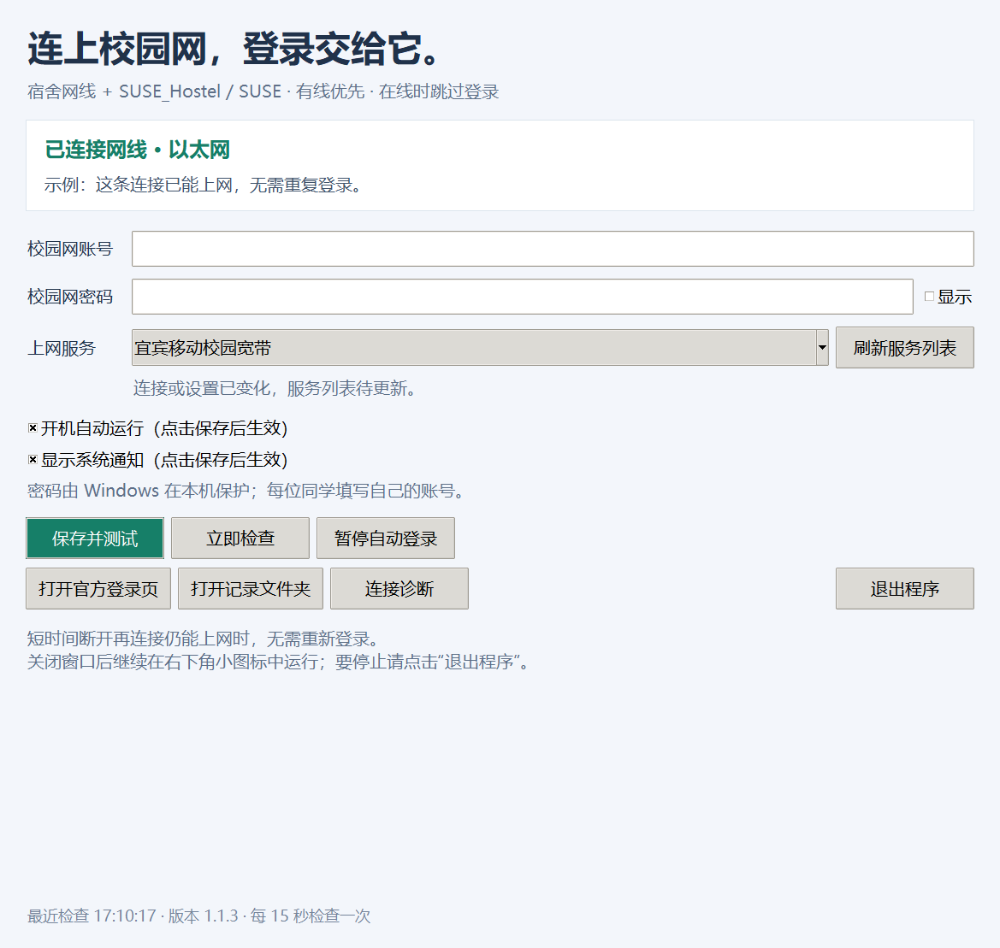

连上校园网，登录交给它。
校园网自动登录 · Windows 1.1.3
适用：四川轻化工大学宜宾校区，Windows 10/11 64 位。支持校园网线、SUSE_Hostel 和 SUSE。
第一次使用
- 打开程序。将压缩包完整解压到固定文件夹，双击
CampusLogin.exe。 - 填写设置。插好校园网线或连接校园 Wi-Fi，填写自己的校园网账号、密码，选择对应的上网服务。
- 保存。按需勾选“开机自动运行”和“显示系统通知”，点击“保存并测试”。以后保持程序运行，需要认证时会自动登录。
密码由 Windows 在本机保护。

日常使用
已经在线时，程序会跳过登录；同时连接网线和校园 Wi-Fi 时，优先检查网线。
关闭窗口后，程序继续在右下角托盘运行。图标可能收在向上箭头里，右键小图标可打开设置或退出程序。
| 你想做什么 | 操作 |
|---|---|
| 马上检查网络 | 点击“立即检查”。 |
| 暂停或恢复自动登录 | 点击“暂停自动登录 / 恢复自动登录”。 |
| 修改账号、服务或选项 | 修改后点击“保存并测试”。 |
| 更新上网服务 | 点击“刷新服务列表”，选择后保存。学校更改服务名称时也这样操作。 |
| 关闭系统通知或开机启动 | 取消对应勾选，再点击“保存并测试”。 |
| 完全停止程序 | 点击“退出程序”，或从托盘菜单退出。 |
升级
- 右键右下角旧程序小图标，选择“退出程序”。
- 将新版完整解压到固定文件夹，打开新版
CampusLogin.exe，原设置会继续沿用。 - 如使用开机启动，在新版点击一次“保存并测试”更新启动位置，之后保持程序文件夹位置不变。
常见问题
| 现象 | 操作 |
|---|---|
| 当前已在线，暂无法刷新服务列表 | 保留原选择，等下次需要登录时更新即可。 |
| 账号或密码未通过认证 | 检查账号、密码和上网服务，再点击“保存并测试”；需手动处理时点击“打开官方登录页”。 |
| 开机后没有自动运行 | 勾选“开机自动运行”并保存，检查任务管理器中的启动应用是否启用。移动过文件夹后，重新打开程序并保存一次。 |
| 其他连接问题 | 点击“连接诊断”，将复制的报告和窗口提示发到下方反馈入口。 |
反馈问题时，附上校区、Windows 版本和连接方式。请不要发送密码，截图遮住账号。
停止使用与删除设置
取消“开机自动运行”并保存，退出程序后删除程序文件夹。若要一并删除账号设置，按 Win + R，输入 %LOCALAPPDATA%\SUSECampusLogin，删除对应的数据文件夹。